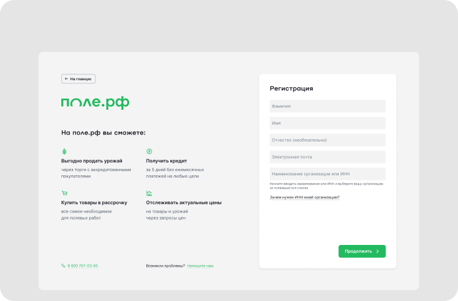
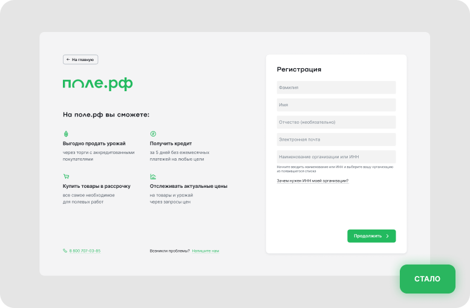

+11%
Рост конверсии
в регистрацию
В 2024 и 2026 годах переработал систему регистрации «поле.рф»: запутанный флоу, модалки и баги били по конверсии. Цель — упростить путь до аккаунта и поднять доверие к платформе.
Рост конверсии
в регистрацию
Сокращение обращений
в поддержку
Уменьшение времени регистрации
Единственный дизайнер на задаче. В связке с PM проводил исследования, пользовательские тесты и довёл до прода текущий флоу регистрации.
Нашёл и устранил барьеры в регистрации: на основе анализа флоу, вебвизора, тестов и интервью переработал сценарий — отдельная страница вместо модалок, более простые шаги и валидация. В 2026 году — дальнейшее упрощение с учётом объединения ролей и перехода на дизайн-систему.

Процесс работы над редизайном представлен ниже.
Система регистрации изначально базировалась на модальных окнах, но такой подход оказался неудобным: окна не были унифицированы — они различались по размеру и стилю, а компоненты ввода содержали ошибки.
Начал с анализа текущего флоу: составил полный юзерфлоу со всеми точками входа для каждой роли. Положительные стороны отмечал зелёными стикерами, негативные — красными.

Следующим этапом стал просмотр пользовательских сессий через вебвизор в Яндекс.Метрике. Проанализировал несколько десятков записей, где пользователи пытались пройти регистрацию, и выявил ряд препятствий, мешающих завершить процесс.

Основные проблемы оказались на стороне фронтенда: некорректно работал компонент выбора ИНН из списка, валидация была реализована некачественно. При этом этапы ввода номера телефона и смс-кода большинство проходили без затруднений. Сложность возникала именно на моменте, где требовался ввод ИНН — поле нельзя было пропустить, что и становилось критическим барьером.
В результате анализа конкурентов, которых было изучено порядка 10-15, выявилась интересная тенденция: большинство из них используют отдельную страницу для регистрации. Это позволяет удерживать пользователя дольше, а также предоставляет дополнительную информацию о продукте, его преимуществах и выгодах.


Далее я перешёл непосредственно к созданию драфтов и прототипов, чтобы сформировать концепцию и согласовать её с заинтересованными сторонами, включая РО других направлений. В результате было разработано две концепции.

После этого у нас появилось гораздо больше информации о концепциях, и мы приступили к наиболее значимым этапам разработки. Одним из них стало ABC-тестирование с участием сторонних пользователей на платформе Pathway.
С учетом мнений РО была проведена работа над макетами и сделаны 3 варианта: с поинтами слева, с поинтами справа, без поинтов с центровкой на экране


Выиграл 2-й вариант флоу


Следующим этапом стал, пожалуй, самый интересный и одновременно самый сложный момент в работе над системой регистрации и авторизации — проведение пользовательских интервью. В фокусе оказались региональные менеджеры и непосредственно сами фермеры.
Этот этап растянулся на полтора месяца, поскольку собрать всех в одно время оказалось довольно сложно, и нам пришлось подстраиваться под графики респондентов, нередко проводя интервью в нерабочие часы, а иногда даже за полночь.
В итоге мы финализировали две концепции и подготовили два детальных интерактивных прототипа в Figma.

На одном из созвонов с PM мы решили, что стоит сделать концептуальный вариант с боковым степпером, который на ранних этапах согласования не был принят из-за больших ресурсов на создание и поддержание.

По итогам интервью мы остановились на одном варианте и доработали все макеты в Figma. Полный пользовательский флоу был готов уже через неделю, а ещё примерно полторы недели ушли на его груминг вместе с разработчиками.


В 2026 году в рамках работы с личным кабинетом пользователя и объединением всех ролей на платформе компания инициировала упрощение регистрации. Ниже приведены финальные экраны регистрации.


Наглядно сравнить изменения можно ниже.



Ищу сильную команду
и открыт к предложениям 🤝